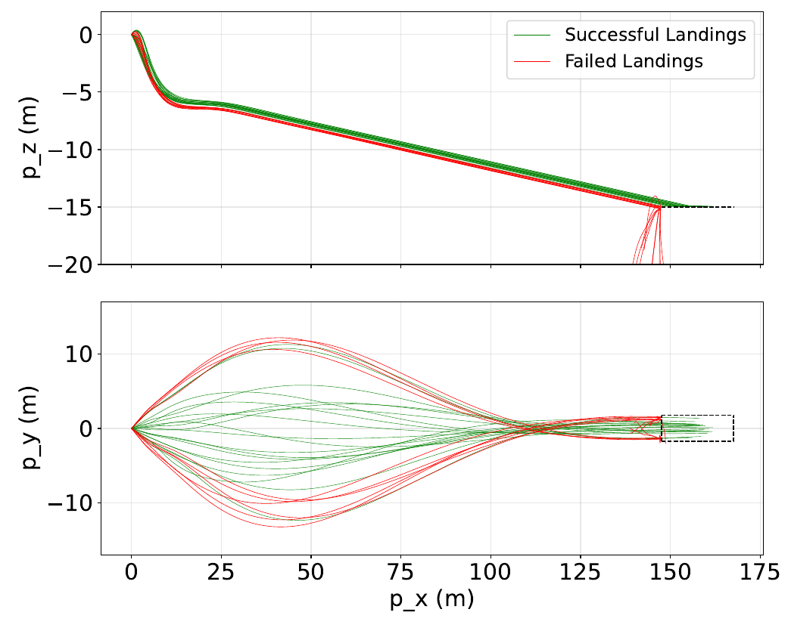
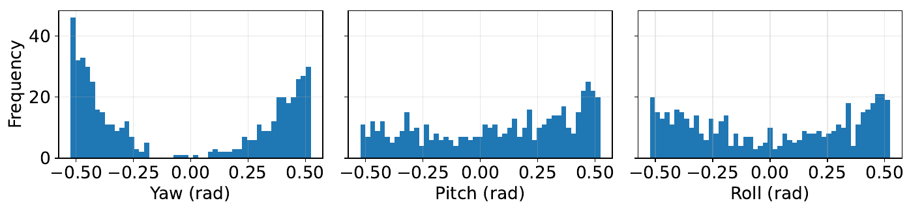

01 / Flight dynamics & control / Evaluated in simulation
AE353 · Two-person team project
LQR landing controller for an unpowered flying wing
Our two-person team found a trim condition, linearized the supplied flying-wing dynamics, and tuned an LQR controller for elevon-driven landing control. We evaluated 4,000 randomized approaches and analyzed initial-attitude distributions to investigate undershoot, lateral drift, and the limits of the local controller.
- Team contribution
- Controller design and evaluation reported jointly with Navid Navidzadeh
- Tools
- LQR · State-space modeling · Python · SymPy
- Outcome
- 87.3% landing success across 4,000 simulated trials

Trim before feedback
Our team used a numerical least-squares search to establish an equilibrium for a ten-state model with two elevon inputs. Two position coordinates were excluded from the trim-state model so the aircraft could be in equilibrium while moving.
Jacobian linearization, a controllability check, and closed-loop eigenvalues established the basis for an LQR state-feedback controller. We iteratively tuned state and control weights to balance aircraft response against elevon motion.
Evaluate the landing, then investigate the misses
87.3% success over 4,000 randomized trials exceeded the project’s 85% landing requirement.
Evaluation began 150 m before and 15 m above the runway, with randomized initial airspeeds and small air disturbances. Successful and failed paths provided more useful evidence than a single nominal demonstration.
Failures included undershoot and lateral drift. Examining their initial yaw, pitch, and roll showed the limits of a controller designed around a local linear model: larger initial attitude offsets were harder to recover from.
{kind=link}

Implementation & attribution
The project notebooks contain the trim search, symbolic Jacobians, Riccati-equation solution for the LQR gain, a Controller class that returns right and left elevon commands, and a simulate_trials loop with landing classification and trajectory plots. These additions sit on the supplied ae353_zagi simulation interface and aircraft equations.
The report’s 87.3% result is supported by the saved 3,491-of-4,000 output in ZagiDemo-template.ipynb. DP2_Team33.ipynb retains a separate 1,757-of-2,000 output (87.8%), while its current call requests one trial. These are saved development states, not a new rerun. The case study uses the submitted report’s result.
Maxwell Lutter and Navid Navidzadeh share credit for the controller-design study. The available report does not assign particular functions to either teammate.